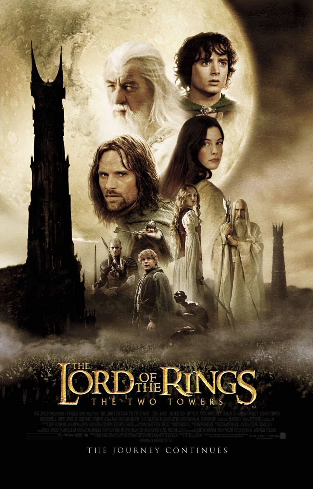

| Nominations | |||
|---|---|---|---|
| Category | Nominees | Result | Voted |
| Best Picture | Barrie M. Osborne, Fran Walsh, and Peter Jackson | Nominated | |
| Film Editing | Michael Horton | Nominated | |
| Art Direction | Alan Lee, Dan Hennah, and Grant Major | Nominated | |
| Visual Effects | Alex Funke, Jim Rygiel, Joe Letteri, and Randall William Cook | Won | |
| Sound | Christopher Boyes, Hammond Peek, Michael Hedges, and Michael Semanick | Nominated | |
| Sound Editing | Ethan Van der Ryn and Michael Hopkins | Won | |